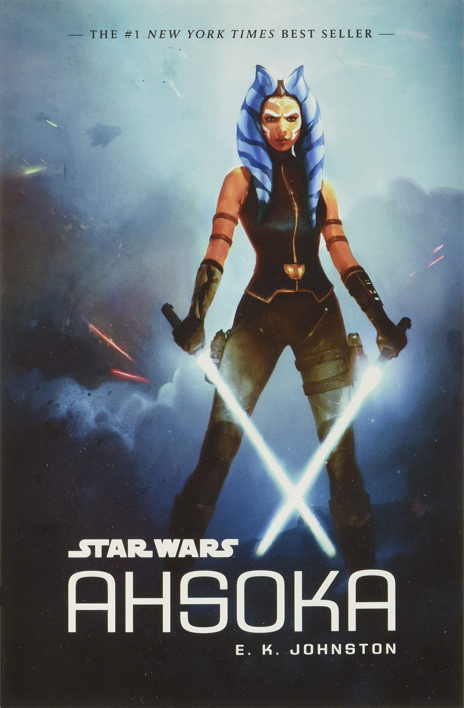

Ahsoka
E. K. Johnston
Ambientado 1 ano após os acontecimentos vistos no final da série animada The Clone Wars/A Guerra dos Clones e após o final do filme Star Wars - Episódio III: A Vingança dos Sith, o livro trás a primeira aventura solo da Togruta ex-aprendiz de Anakin Skywalker.
Nessa aventura, Ahsoka Tano precisa lidar com a nova ordem imposta na galáxia após a execução da Ordem 66 e tentar sobreviver. Porém, quando a população de uma pequena lua começa a ser exploradas pelos imperiais, a ex-Jedi precisa decidir entre manter-se segura ou seguir seus ensinamentos e ajudar as pessoas.
De leitura acessível e fluída, a história mostra o processo de amadurecimento da personagem, amplia a visão do leitor sobre o funcionamento do exército imperial, além de mostrar cenas que ocorrem durante a série animada sob a ótica de outros personagens.
Leitura recomendada para todos os fãs da personagem e que queriam entender os passos que a personagem trilhou até sua reaparição na série animada Star Wars Rebels e na série O Mandaloriano.
Observação: Com o lançamento da recém lançanda série animada Histórias dos Jedi, os alguns acontecimentos narrados no livro passam a não contar mais para a linha de tempo oficial de Star Wars.
Quantidade de páginas
416
Onde comprar?
História da personagem
Observação: O vídeo abaixo contém spoilers das séries animadas The Clone Wars/A Guerra dos Clones, Star Wars Rebels, além do livro citado acima.
Assista apenas se já viu pelo menos as séries animadas.